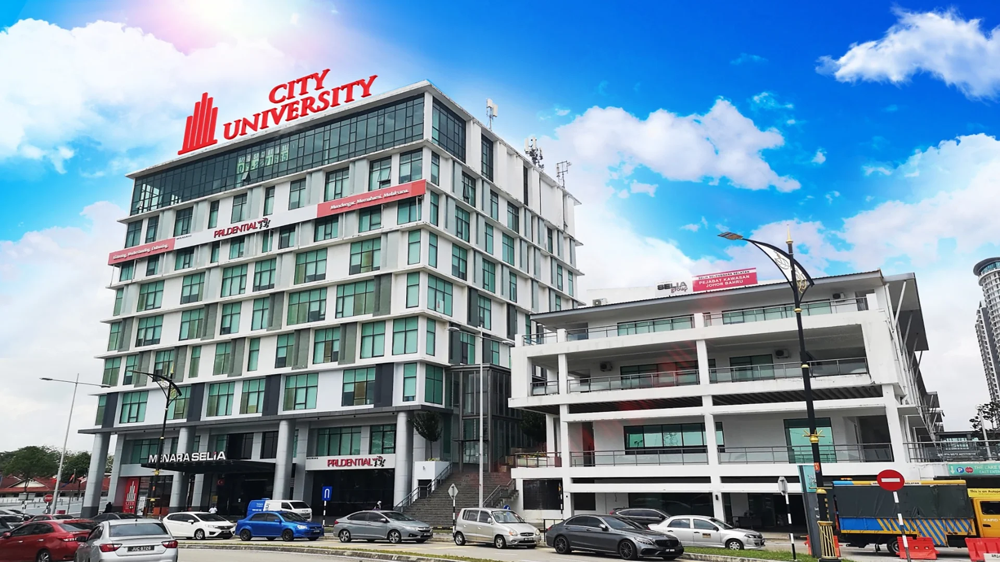

Building Future Leaders Through Excellence & Innovation
We are proud to have four campuses across Malaysia, located in Petaling Jaya, Cyberjaya, Johor Bahru, and Kota Kinabalu. Our newly opened Cyberjaya campus features state-of-the-art facilities, providing an exceptional learning environment.

| Course Name | Duration | 1st Year Fees |
|---|---|---|
| Bachelor of Business Administration (Hons) | 3 Years | RM 21,350 |
| Bachelor of Computer Science (Hons) | 3 Years | RM 21,350 |
| Bachelor of Fashion Design Technology (Hons) | 3 Years | RM 21,350 |
| Bachelor of Hotel Management (Hons) | 3 Years | RM 21,350 |
| Bachelor of Architectural Technology (Hons) | 4 Years | RM 21,350 |
| Doctor of Philosophy in Engineering | 3 Years | RM 3,810 (Initial) |
LSBF is one of the oldest private institutions in Malaysia. It offers a wide range of programs that are fully accredited by the Malaysian Qualifications Agency (MQA). With a focus on employability, students gain industry exposure through internships and professional workshops.